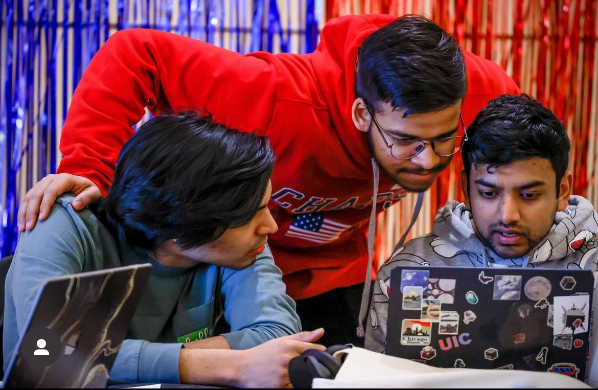
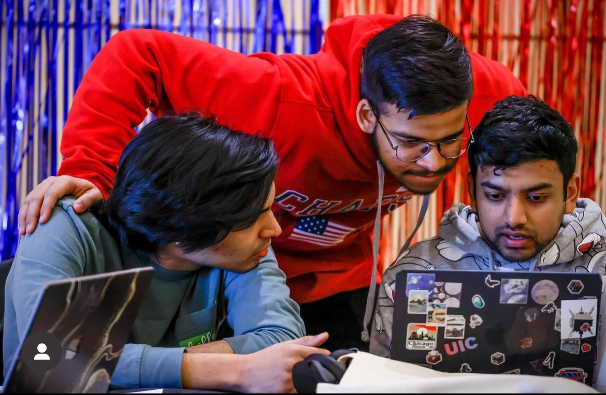

Hello! 👋
I'm Rahin Jain. A data scientist, trying to make sense of the world with numbers.
Get in touch 👉 rahinjain1@gmail.com
Computer Science Department @University of Illinois | Chicago, Illinois
January 2023 - Present
Provide support to the Database Systems course (UIC CS480) for Prof. David Hayse
Lyxar India | New Delhi, India
May 2024 - August 2024
Provided support to logistics and finance department by performing analysis on financial data
Student Affairs @University of Illinois | Chicago, illinois
July 2023 - May 2024
Researched on student population at University of Illinois to find issues with campus services
Here are some snapshots of my favorite moments and things I enjoy! (and some brainrot)
 
